As with many series that gain popularity it's not unnatural for it to get a video game based on it.
Released in 1993 for the Super Famicom and never localised outside of Japan, this game is a point and click adventure game mixed with some rpg elements using a card based system; mostly based on the story of Stardust Crusaders, but with some differences in terms of plots and progression due to the medium that it is present as.
Depending on where you play this fighing game based on Stardust Crusaders, you'll play a slightly version. JoJo's Venture is the basic arcade version that was released in 1998. This got updated with several more characters added in JoJo's Bizarre Adventure: Heritage for the Future, which was released in 1999 for the Playstation and the Dreamcast. The game was rereleased in 2012 as JoJo's Bizarre Adventure HD for the Playstation Netwok and Xbox Live Arcade. The most notable thing about this game is the close involvement that Hirohiko Araki had with it, namely creating a brand new character design for Midler, a minor antagonist from halfway through Part 3 as she hadn't had a concrete character design.
An action adventure game for the Playstation 2 released in 2002, this essentially follows the story of Part 5: Vento Aureo. All of the protagonists from Part 5 are playable, which marks the only time that Abbacchio is playable in any game. While much of the game is battle focused, there are also some puzzles in the game to solve as well.
Released in 2006 for the Playstation 2, this game follows the plot of Phantom Blood heavily. It is a fighting game that has a number of different characters to be played as that depends on the mode that is selected to play through.
Released in 2013, and getting an international release in 2014 for the Playstation 3, All Star Battle is a 2.5D fighting game with 41 playable characters from across the whole series. There is a loose story mode in the game, but it just follows the basic plot of each part. Due to being a fighting game, there are a number of different stages based on a memorable location from each Part, and some Parts have more than one stage.
Released in 2015, and getting an international release in 2016 for the Playstation 4, Eyes of Heaven is a fighting game similar to All Star Battle, featuring 53 playable characters from across the whole series. It also has a number of stages from across the whole series based on memorable scenarios. The story mode of the game is also completely original and was supervised by Araki himself, which features all of the characters meeting each other through some mysterious force.
Released in 2014 in Japan on Android and IOS, this game features characters from the first four parts of the series. In terms of gameplay, this game has each character be represented as a medal and then attack other medals.
Released in 2017 in Japan on Android and IOS, this game features characters from the first five parts of the series. It was originally a beat 'em up style game, but was changed to a tactial turn based system.
Released in 2018, this game features a more cutesy artstyle compared to anything else in the series and is a puzzle tile matching game containing characters from the first five parts of the series.
Released in 2019 in arcades, this game is a battle royale game featuring stand wielding characters from Parts 3-5. Not much is currently known about the game yet.
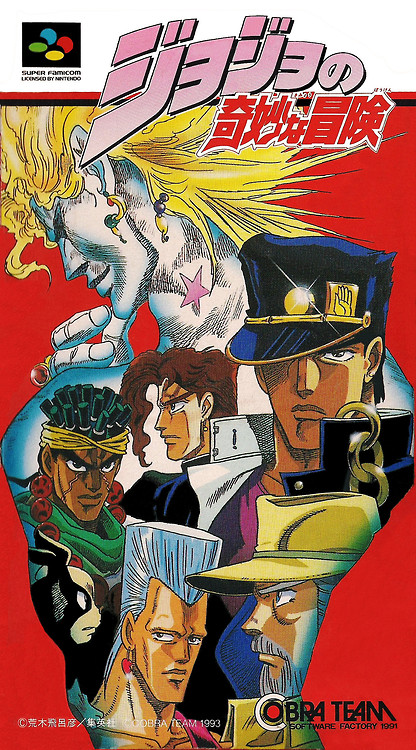The box for JoJo's Bizarre Adventure for the Super Famicom.
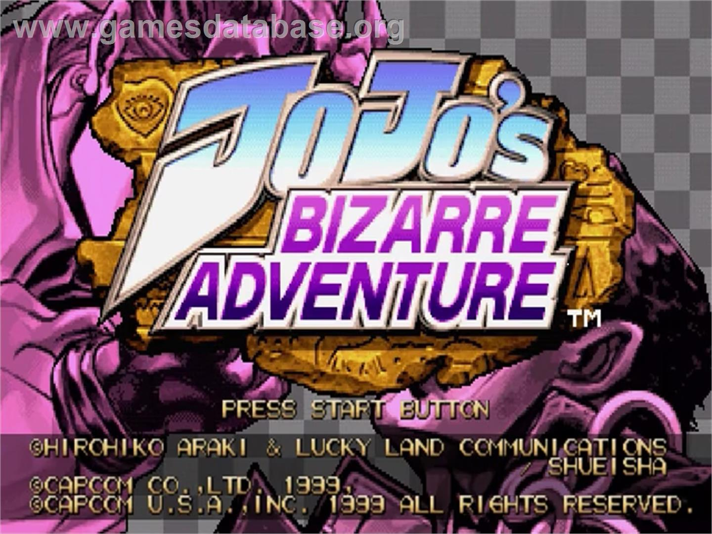The title screen for Heritage for the Future.
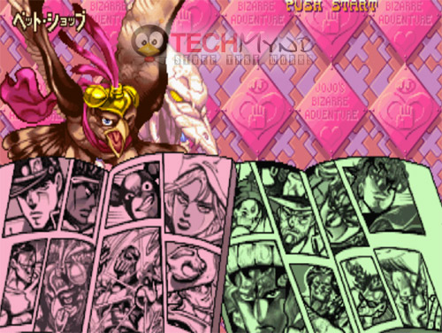The playable cast of Heritage for the Future.
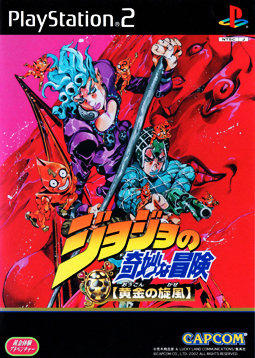The boxart for GioGio's Bizarre Adventure.
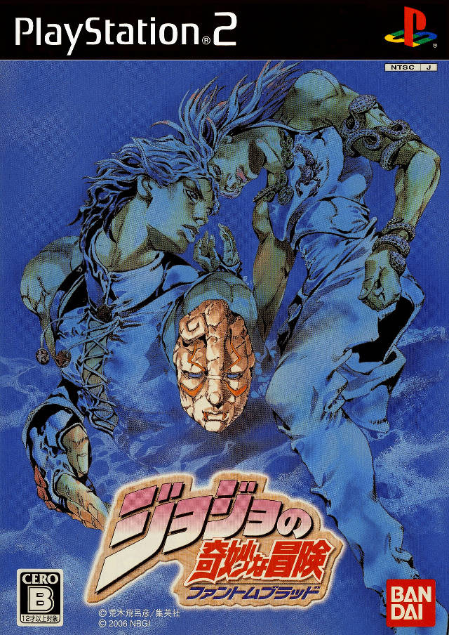The boxart for JoJo's Bizarre Adventure: Phantom Blood.
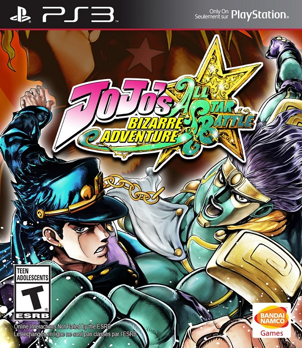The boxart for All Star Battle.
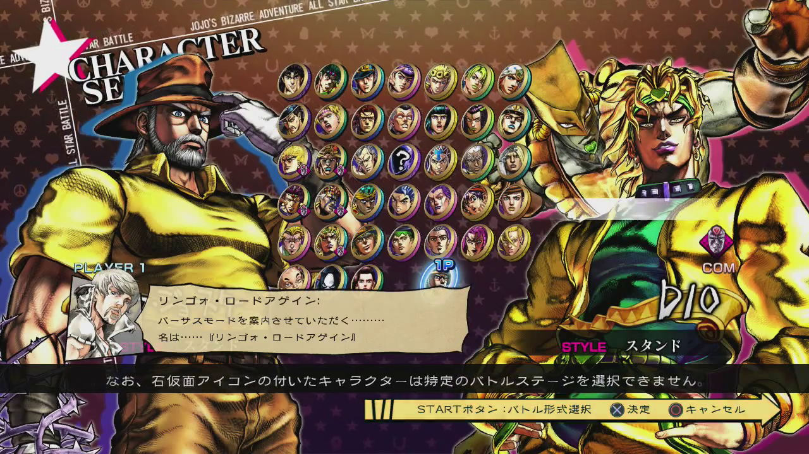The playable cast of All Star Battle.
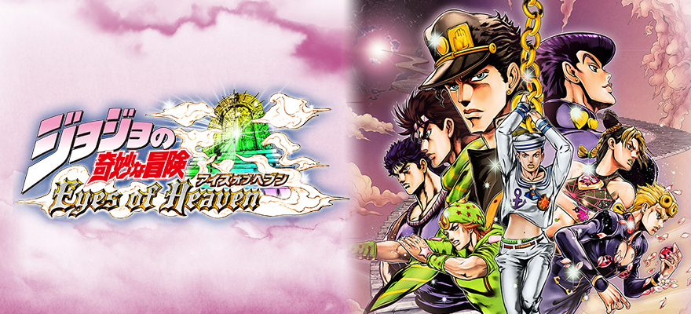The boxart for Eyes of Heaven.
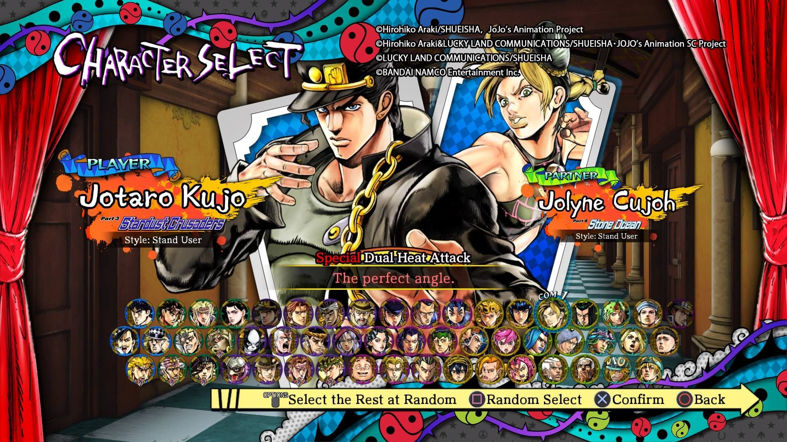The playable cast for Eyes of Heaven.
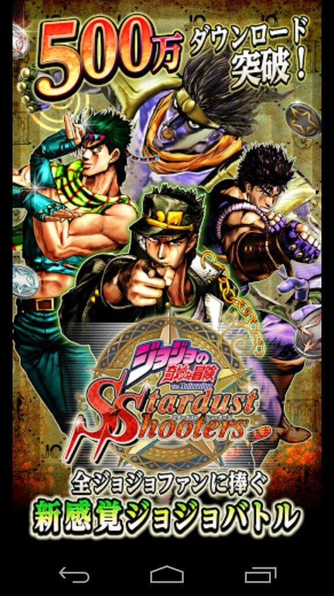Promotional artwork for Stardust Shooters.
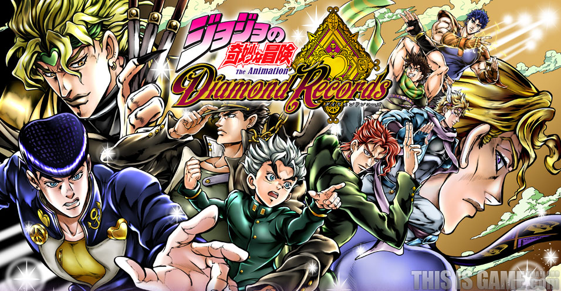Promotional artwork for Diamond Records.

Promotional artwork for Pitter-Patter Pop.
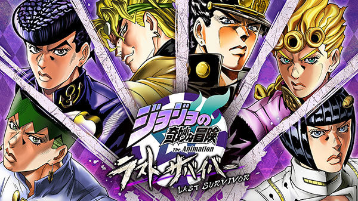Promotional artwork for Last Survivor.
Return